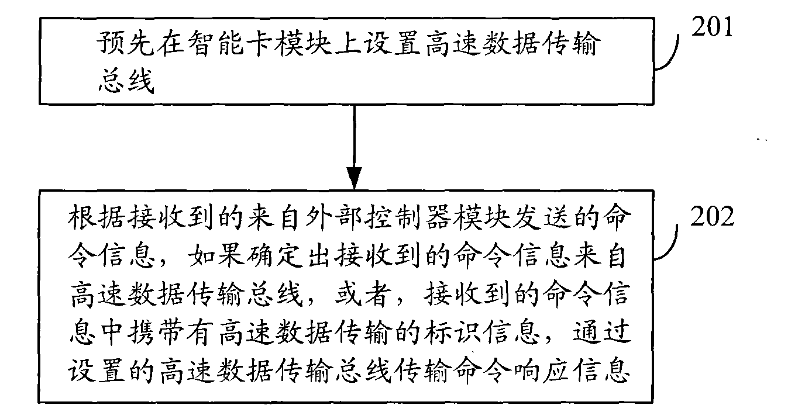

发明名称--一种智能卡模块传输信息的方法及系统
| 申请号 | CN200810222260.8 | 申请日 | 2008.09.12 | ||
| 公开（公告）号 | CN101354752A | 公开（公告）日 | 2009.01.28 | ||
| IPC分类号 | G06F13/38; G06K17/00 | 申请（专利权）人 | 普天信息技术研究院有限公司; | ||
| 发明人 | 廖泉;张海英;曹会扬;王晨阳;姜涌; | 优先权号 |
摘要:
本发明公开了一种智能卡模块传输信息的方法及系统，预先在智能卡模块上设置高速数据传输总线，根据接收到的来自外部控制器模块发送的命令信息，如果确定出接收到的命令信息来自高速数据传输总线，或者，接收到的命令信息中携带有高速数据传输的标识信息，通过设置的高速数据传输总线传输命令响应信息。应用本发明，可以提高智能卡模块传输速率，方便用户应用高速大数据量业务，有利于用户使用和新业务的扩展。
摘要附图:
